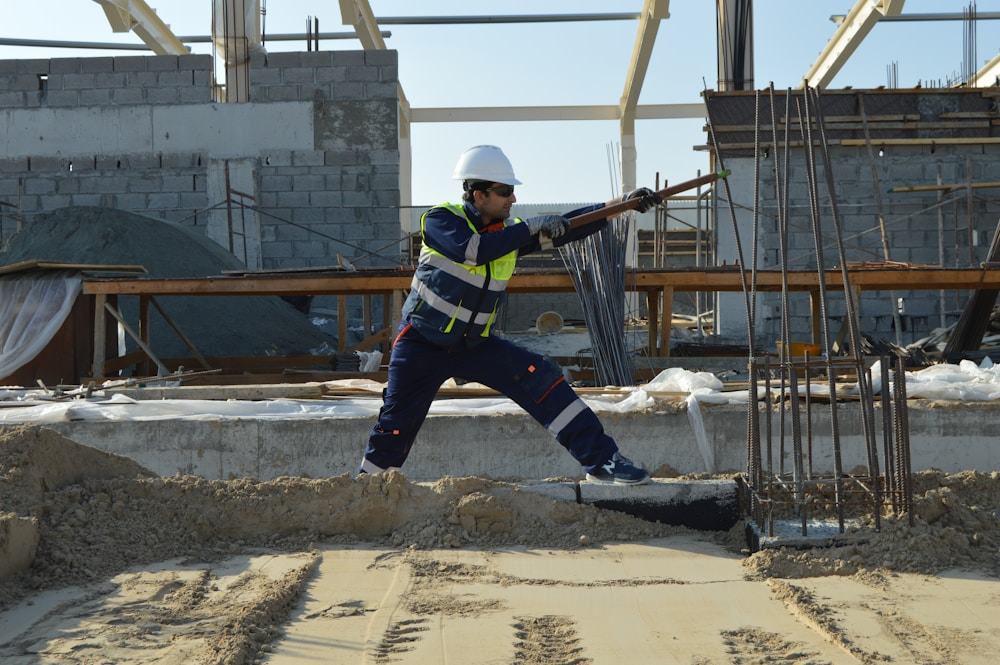
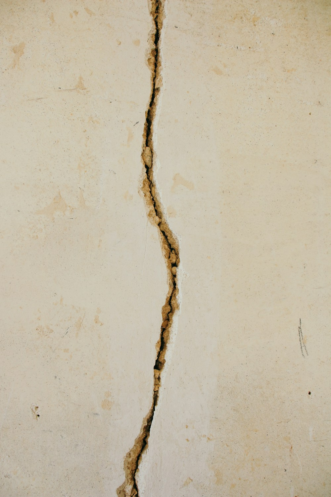

Deux attestations, deux moments clés du projet
Les attestations parasismiques ont été introduites par le Décret n°2010-1254 du 22 octobre 2010 relatif à la prévention du risque sismique. Ce texte, dont les dispositions sont reprises aux Articles R431-16 et R462-4 du Code de l'urbanisme, distingue deux temps d'intervention :
- L'AT1 — attestation de prise en compte des règles de construction parasismique au dépôt du permis de construire. Elle certifie que le projet a bien été conçu en intégrant les règles parasismiques applicables.
- L'AT2 — attestation de prise en compte des règles de construction parasismique à l'achèvement des travaux. Elle certifie que la construction réalisée est conforme à ces mêmes règles.
Ces deux attestations forment un suivi de bout en bout : de la conception à la livraison, la chaîne de responsabilité parasismique est tracée et documentée. L'une ne remplace pas l'autre — un projet peut avoir été bien conçu mais mal exécuté, ou l'inverse. C'est pourquoi les deux sont exigées.
À retenir : L'AT1 porte sur les plans du projet. L'AT2 porte sur la construction achevée. Ces deux documents sont distincts et peuvent être établis par des professionnels différents selon la catégorie du bâtiment.
Quels bâtiments sont concernés ?
L'obligation d'attestation dépend de deux critères combinés : la catégorie d'importance du bâtiment et la zone sismique de la commune où il est implanté.
Les quatre catégories d'importance
Le Décret du 22 octobre 2010 répartit les bâtiments en quatre catégories selon leur usage, leur fréquentation et leur rôle en situation de crise :
- Catégorie I : bâtiments à faible occupation (hangars agricoles, entrepôts sans personnel permanent)
- Catégorie II : bâtiments à usage courant (habitations, bureaux inférieurs à 300 m², petits commerces)
- Catégorie III : établissements recevant du public (ERP), écoles, structures de santé, immeubles de grande hauteur
- Catégorie IV : bâtiments stratégiques (centres de secours, hôpitaux de référence, ouvrages de la défense nationale)
Obligations AT1 et AT2 selon la zone et la catégorie
Le tableau suivant récapitule les obligations pour les constructions neuves et les extensions significatives soumises à permis de construire :
| Catégorie | Zone 2 — faible | Zone 3 — modérée | Zone 4 — moyenne | Zone 5 — forte |
|---|---|---|---|---|
| I | Règles applicables, pas d'attestation formelle | Règles applicables, pas d'attestation formelle | Règles applicables, pas d'attestation formelle | Règles applicables, pas d'attestation formelle |
| II | AT1 + AT2 | AT1 + AT2 | AT1 + AT2 | AT1 + AT2 |
| III | AT1 + AT2 | AT1 + AT2 | AT1 + AT2 | AT1 + AT2 |
| IV | AT1 + AT2 | AT1 + AT2 | AT1 + AT2 | AT1 + AT2 |
La zone 1 (sismicité très faible, couvrant une partie de l'Île-de-France et de la Bretagne intérieure) n'est pas listée : aucune attestation parasismique n'y est requise. La zone 0, qui n'existe plus depuis la réforme de 2010, n'est plus utilisée.
Guadeloupe — Zone sismique 5 : La Guadeloupe est la seule zone de France classée en sismicité forte (zone 5). Toute construction de catégorie II à IV — y compris une simple maison individuelle — est soumise à l'obligation AT1 + AT2 avec application exclusive de l'Eurocode 8. Les règles PS-MI (applicables en zones 2 et 3 pour les petits bâtiments) ne s'appliquent pas en zone 5.

L'attestation AT1 — au dépôt du permis de construire
L'AT1 est jointe au dossier de permis de construire déposé en mairie. Son absence rend le dossier incomplet au sens de l'Article R431-16 du Code de l'urbanisme : l'instruction peut être suspendue jusqu'à sa production.
Ce qu'elle doit certifier
L'attestation AT1 certifie que le projet architectural et structural intègre les règles parasismiques en vigueur, à savoir :
- Les règles PS-MI (Règles parasismiques applicables aux maisons individuelles et bâtiments assimilés) pour les bâtiments de catégorie II en zones 2 et 3, dont la surface de plancher est inférieure ou égale à 400 m² et dont le nombre de niveaux n'excède pas deux
- L'Eurocode 8 (norme EN 1998) pour tous les autres cas : bâtiments de catégorie III et IV, zones 4 et 5, ou bâtiments de catégorie II dépassant les seuils d'application des PS-MI
Le signataire de l'AT1 engage sa responsabilité professionnelle sur la conformité du projet aux exigences réglementaires. Il s'appuie sur les notes de calcul de structure, les plans de fondations et les plans de structure pour établir ce document.
Qui peut établir l'AT1 ?
Selon l'Article R431-16 du Code de l'urbanisme, l'AT1 peut être établie par :
- Un ingénieur structure ou bureau d'études techniques (BET) responsable de la conception des fondations et de la structure du bâtiment
- Un bureau de contrôle technique agréé ayant reçu une mission parasismique — obligatoire pour les bâtiments de catégorie III et IV où le contrôle technique est imposé par la réglementation
L'attestation AT2 — à l'achèvement des travaux
L'AT2 est déposée en mairie simultanément à la déclaration d'achèvement et de conformité des travaux (DAACT), prévue à l'Article R462-1 du Code de l'urbanisme. Sans elle, la DAACT est considérée comme incomplète au regard de l'Article R462-4 du même code.
Ce qu'elle doit certifier
Contrairement à l'AT1 qui porte sur les plans, l'AT2 certifie que la construction effectivement réalisée est conforme aux règles parasismiques. Cela implique que son signataire ait procédé à :
- Des visites de chantier aux phases structurelles critiques : mise en place des armatures de fondations, des voiles et des poteaux avant coulage, vérification des aciers de liaison entre éléments
- La vérification que les dispositions constructives définies dans les notes de calcul et les plans d'exécution ont bien été respectées sur le terrain
- Le constat de l'absence d'écart non justifié entre la conception initiale (AT1) et la construction exécutée
Conséquences d'une AT2 manquante
L'absence ou le retard de production de l'AT2 peut entraîner plusieurs complications :
- La DAACT reste incomplète, ce qui peut retarder ou bloquer la mise en service légale du bâtiment
- En cas de sinistre sismique, la garantie décennale peut être fragilisée si la conformité aux règles parasismiques n'a pas été formellement attestée à l'achèvement
- Pour les établissements recevant du public (ERP) de catégorie III et IV, la préfecture peut s'opposer à l'ouverture au public en l'absence de ce document

Qui peut établir ces attestations ?
La réglementation ne restreint pas l'établissement des attestations parasismiques à un seul type de professionnel. Deux acteurs sont habilités, selon la catégorie et la complexité du projet :
Le bureau d'études techniques structure
Pour les bâtiments de catégorie II, le bureau d'études techniques (BET) structure ayant en charge la conception est le mieux placé pour établir l'AT1 et l'AT2. Il détient les notes de calcul, connaît le projet dans ses moindres détails, assure le suivi de chantier aux phases structurelles et est en mesure de vérifier la conformité in situ. Cette solution est souvent plus économique et plus fluide qu'un bureau de contrôle externe, tout en offrant la même rigueur technique.
Le bureau de contrôle technique agréé
Pour les bâtiments de catégorie III et IV, le recours à un bureau de contrôle technique agréé est obligatoire (mission L + S + Ps selon la nomenclature CTI). Le bureau de contrôle intervient en complément du BET structure : il vérifie de manière indépendante les calculs et la mise en œuvre. C'est lui qui établit ou cosigne l'AT1 et l'AT2 dans ces cas.
Attention en Guadeloupe (zone 5) : L'application exclusive de l'Eurocode 8 en zone sismique 5 exige une expertise que tous les bureaux d'études métropolitains ne possèdent pas. La définition du spectre de réponse, la prise en compte des effets de site et les dispositions constructives spécifiques aux bétons banché tropicaux nécessitent une pratique régulière de la conception parasismique en zone 5. Vérifiez que votre BET structure dispose de références locales ou spécifiques au DOM-TOM.
Comment MH Structure peut vous aider
MH Structure établit les attestations parasismiques AT1 et AT2 pour l'ensemble du territoire français, avec une expertise renforcée en Guadeloupe (zone sismique 5) et dans le Tarn (zones 2 et 3) :
- Vérification de votre obligation d'attestation selon la zone sismique et la catégorie de votre bâtiment
- Établissement de l'AT1 à partir des notes de calcul structure pour accompagner votre dossier de permis de construire
- Suivi de chantier aux phases structurelles clés et établissement de l'AT2 à l'achèvement des travaux
- Calculs de vérification selon l'Eurocode 8 (EN 1998) ou les règles PS-MI avec logiciels certifiés
- Coordination avec votre architecte, votre maître d'œuvre et votre bureau de contrôle
Photos : OANA BUZATU — via Unsplash